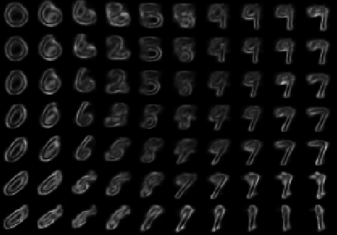

Daniel Flam-Shepherd
I'm a machine learning Ph.D. student at the University of Toronto in the
Department of Computer Science
and the Vector Institute.
My supervisor is Alan Aspuru-Guzik.
My research interests include:
● Deep generative models for scientific discovery
● 3D molecular design using reinforcement learning
Previously I worked on priors for Bayesian neural networks with
David Duvenaud.
Papers, preprints and projects
Graph Deconvolutional Generation
Graph generation is an extremely important task, as graphs are found throughout different areas of science and engineering.
In this work, we focus on the modern equivalent of the Erdos-Renyi random graph model: the graph variational autoencoder (GVAE).
This model assumes edges and nodes are independent in order to generate entire graphs at a time using a multi-layer perceptron decoder.
As a result of these assumptions, GVAE has difficulty matching the training distribution and relies on an expensive graph matching procedure.
We improve this class of models by building a message passing neural network into GVAE's encoder and decoder.
We demonstrate our model on the specific task of generating small organic molecules.
Daniel Flam-Shepherd, Tony Wu, Alan Aspuru-Guzik
preprint , 2019
Daniel Flam-Shepherd, Tony Wu, Alan Aspuru-Guzik
preprint , 2019
Neural Message Passing on Higher Order Paths
Graph neural network (GNNs) have achieved impressive results in predicting molecular properties,
but do not directly account for local and hidden structures such as functional groups and molecular geometry.
At every layer, GNNs aggregate only over first order neighbours, ignoring important
information contained in subsequent neighbours as well as the relationships between those higher order connections.
In this work, we generalize graph neural nets to pass messages and aggregate across
higher order paths. This allows information to propagate over various levels and substructures of the graph.
We demonstrate our model on a few tasks in molecular property prediction.
Daniel Flam-Shepherd, Tony Wu Pascal Friederich Alan Aspuru-Guzik
preprint , 2019
Daniel Flam-Shepherd, Tony Wu Pascal Friederich Alan Aspuru-Guzik
preprint , 2019

Assessing learned representations in variational autoencoders using uncertainty
We describe a useful application of uncertainty in the fully Bayesian variational autoencoder (BVAE),
that uses Bayesian neural networks (BNNs) in its encoder and decoder.
We describe how uncertainty can be used to assess the model's learned representation by interpreting
the approximate posterior and probabilistic decoder as predictive distributions.
We visualize these distributions on a dimensionality reduction task on the swiss roll dataset
and in generative modeling of the MNIST dataset.
Daniel Flam-Shepherd, Tony Wu
preprint , 2019
Daniel Flam-Shepherd, Tony Wu
preprint , 2019
Characterizing and warping the function space of Bayesian neural networks
In this work we develop a simple method to construct priors for Bayesian neural networks
that incorporates meaningful prior information about functions. We fit neural nets to samples of functions
using a hypernetwork, in order to use the empirical moments of the learned weights for our prior parameters.
This method allows us to characterize the relationship between weight space and function space.
Daniel Flam-Shepherd, James Requeima, David Duvenaud
NIPS Workshop on Bayesian Deep Learning, 2018
Daniel Flam-Shepherd, James Requeima, David Duvenaud
NIPS Workshop on Bayesian Deep Learning, 2018

Stick breaking neural latent variable models
Neural processes define a class of neural latent variable models.
We extend this class to an infinite dimensional space by imposing a
stick-breaking prior on the latent space. Using Stochastic Gradient
Variational Bayes, we perform posterior inference for the weights of
the stick-breaking process and develop the stick-breaking neural process (SB-NP).
SB-NPs are able to learn the dimensionality of the latent space and
have improved posterior uncertainty.
Daniel Flam-Shepherd, Yuxiang Gao, Zhaoyu Guo
NIPS Workshop on All of Bayesian Nonparametrics, 2018
Daniel Flam-Shepherd, Yuxiang Gao, Zhaoyu Guo
NIPS Workshop on All of Bayesian Nonparametrics, 2018
Mapping Gaussian process priors to Bayesian Neural Networks
What defines a reasonable prior to use in Bayesian models?
Often, normal distributions are placed over the weights for convenience and
are interpreted as a bias toward less complex functions via smaller weights.
Gaussian processes, on the other hand, have a elegant mechanism for incorporating
prior beliefs about the underlying function - specifying the mean and covariance functions.
In this work, we present an approach to specify a more principled prior for
Bayesian Neural Networks that can leverage the well studied kernel design techniques
from Gaussian process regression.
Daniel Flam-Shepherd, James Requeima, David Duvenaud
NIPS Workshop on Bayesian Deep Learning, 2017
Daniel Flam-Shepherd, James Requeima, David Duvenaud
NIPS Workshop on Bayesian Deep Learning, 2017

Generalized Feedback Alignment
The back-propagation algorithm is one of the main tools for credit assignment
in neural networks where the loss gradient is computed to back-propagate error
from the output layer to the hidden layers. A method called feedback alignment
performs almost as well and is more biologically plausible since it avoids using
the weights from the forward pass in the the backwards pass by replacing them
with random feedback weights. In this work, a general feedback alignment strategy for training
neural networks is proposed and experimented with in an supervised and unsupervised setting